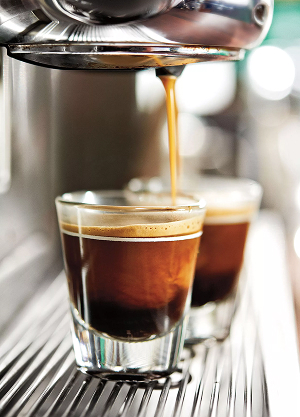

Onze koffie
Bestel nu Vind jouw dichtsbijzijnde locatie Onze Koffie
Bij Starbucks gaat het sinds het begin al om de kwaliteit van de koffie. Onze passie voor koffie wordt alleen overtroffen door onze liefde om het te delen.
Of je nu thuis geniet van een momentje voor jezelf of samen met gasten een nieuwe zak koffiebonen opentrekt het is altijd een ervaring, een explosie van aroma en een gevoel van thuiskomen.
Met zoveel Starbucks koffiebonen om uit te kiezen is het moeilijk om jouw persoonlijke perfecte kop te vinden. We helpen je graag opweg.
Het Starbucks Roast™ Spectrum
Onze koffies zijn ingedeeld op basis van drie brandprofielen: Blond, Medium en Dark, zodat je de smaak en intensiteit kunt vinden die bij je past.
Blonde Roasts Starbucks® Blonde Roast-koffie is het minst lang gebrand en heeft daardoor een zachte en lichtzoete smaak. Het is een benaderbare en smaakvolle kop koffie met lichte hints van de branding.
Medium Roasts Smooth en gebalanceerd, onze medium roasts zijn perfect voor elke koffiemomentje.
Dark Roasts Deze koffies zijn krachtiger door het lange brandingsproces. De robuuste smaken komen naar voren door de intense branding en produceren een koffie met rijke en volle smaken.